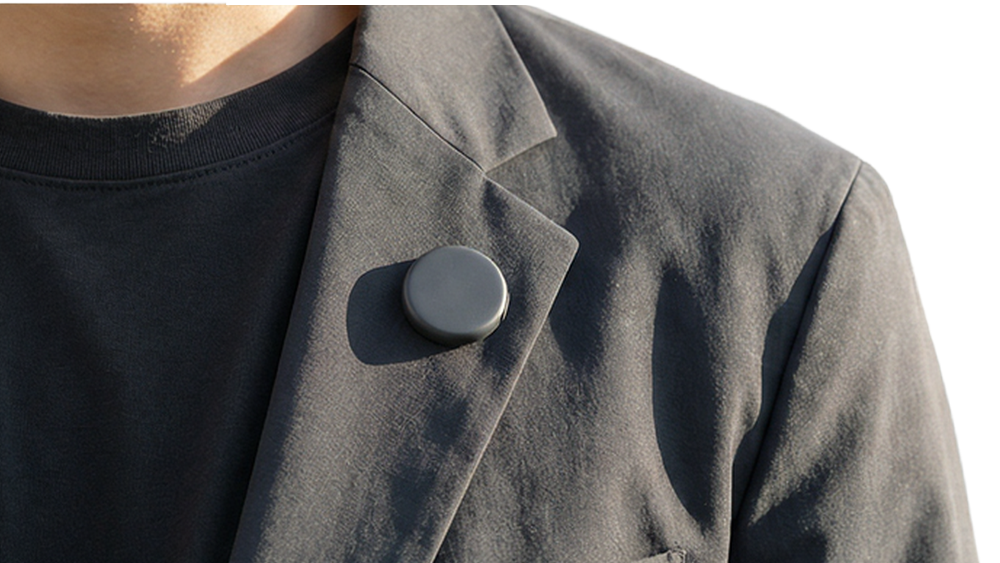

Open Cloud 用户分享 · 5 分钟
给龙虾装一个
随身麦克风
EinClaw Mic 不是再造一个新的 AI 大脑，而是给你已有的 OpenClaw 增加一个更自然、更低摩擦的语音入口。
4G 独立联网
单按钮交互
直达 OpenClaw
BOM 约 ¥50
7
掏手机 / 解锁 / 找入口 / 粘贴到龙虾
→
1
按下，说话，松手走人



第一部分 · 这个硬件是怎么做的
我们不是先做复杂硬件，而是先做对一条输入链路
目标非常单纯: 让一个念头在最短时间里到达 AI。剩下的所有硬件决策，都是围绕这个目标收敛出来的。
4G
脱离手机，独立联网
1
一个按钮，完成输入
~¥50
核心 BOM 成本
Current
对讲机形态
夹在衣领或口袋，最先成立的形态，适合通勤、工作、走路时随手说一句。
Next
手环形态
复用同一套电子架构，只改变佩戴方式和触发动作，继续压低使用门槛。
1
先砍掉多余交互
不做屏幕，不做复杂菜单，不追求实时对话。只保留一个动作: 按下，说话，松手。
2
先脱离手机依赖
4G Cat.1 直连，断网可缓存，恢复信号再补传。关键不是更酷，而是更可靠。
3
尽量复用成熟器件
模组、电池、数字麦克风、LED、马达、USB-C，这些都不是发明，重点是把它们组合成最小可行链路。
4
把试错成本压下来
深圳供应链 + 简单电子方案，让我们能快速打样、快速迭代，而不是陷进大而全硬件项目里。
最后一句
不是做一个会说话的硬件
而是让你的龙虾更容易接住你
如果 OpenClaw 已经足够能干，下一步最值得做的，就不是再造一个大脑，而是补齐输入这块最容易丢 context 的地方。
硬件层: 一个按钮、一条 4G 链路、足够轻的交互负担。
系统层: 一层薄中转，把语音变成 OpenClaw 能直接接住的结构化输入。
场景层: 让创作、开发、待办、知识沉淀这些碎片场景真正跑起来。
einclaw.cn